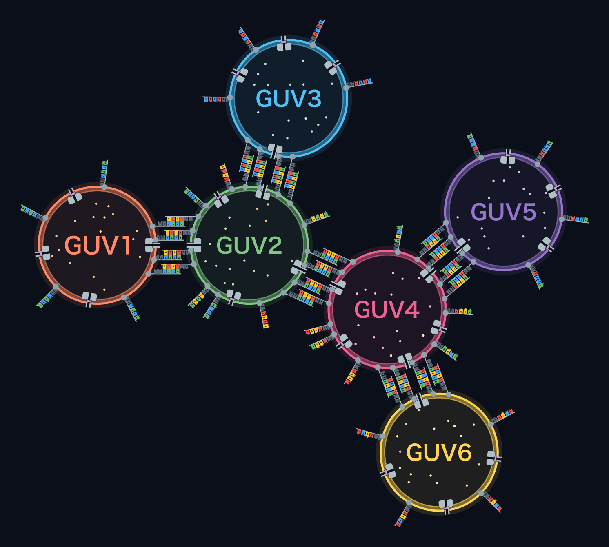
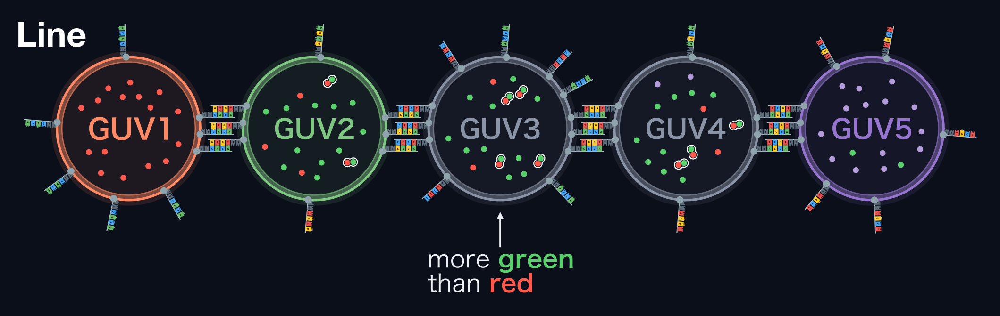
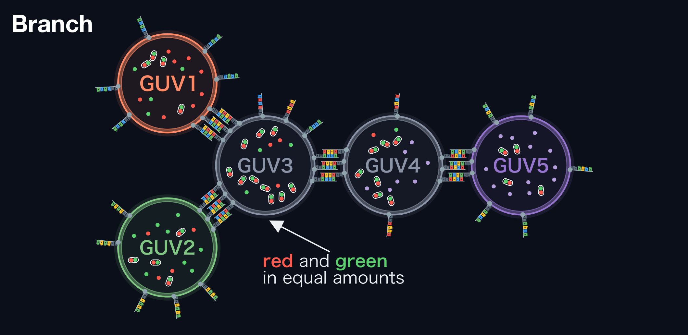

Future

Extension to Branched Networks
In this project, we proposed a network that connects three GUVs in a line: GUV1–GUV2–GUV3. As a next step, we plan to extend this linear network to a branched network.
For example, we consider connecting a fourth GUV (GUV4) to the middle GUV2, in addition to GUV1 and GUV3. GUV2 then becomes a branch point with three connections: GUV1–GUV2, GUV2–GUV3 and GUV2–GUV4. Because each connection in ALiGN is designed independently with its own DNA sequence, we expect that adding a new pair of sequences will add a new branch without disturbing the existing connections.
Contents released from one GUV pass through the branch point and reach two GUVs in different directions. In this way, contents can be moved in various directions, just as cells send signals to many partners.

Branching increases the number of partners that one GUV can have. In a line, a GUV has at most two partners, so it can receive from one side and pass on to the other side. At a branch point, a GUV can have three or more partners. This makes it easier to carry out convergent reactions, in which two parts of a molecule are made separately, joined, and then processed further. Here, the red contents of GUV1 and the green contents of GUV2 react first, and the product then mixes with the purple contents of GUV5. In the line (Fig. 2, top), the red contents of GUV1 have to pass through GUV2 to reach GUV3, so GUV3 is expected to receive more green contents than red contents, and the red contents already mix with the green ones in GUV2. In the branched network (Fig. 2, bottom), GUV1 and GUV2 are both connected directly to GUV3, so the red and green contents are expected to reach GUV3 in similar amounts and mix there evenly. The product is then passed on to GUV4, where it mixes with the purple contents. A branch point can also pass one product to two GUVs for two different reactions.


All the pores between connected GUVs are open, so contents released from one GUV spread in every direction. Pores whose opening or assembly is controlled by light have been reported. Wang et al. modified α-hemolysin, the pore protein that we also use, by chemically attaching small molecules whose shape changes with light (photoswitches), and opened and closed the pores repeatedly with light of two wavelengths [1]. Mutter et al. attached photoswitches to the pore-forming toxin FraC and controlled with light whether it forms pores in membranes [2]. Both studies measured the ionic current through flat lipid membranes [1][2].
If pores of this kind were placed in a branched network, we could open only the pores on the branch that we illuminate, so that contents are expected to move toward a chosen GUV instead of spreading to all of them. Whether these pores work between connected GUVs remains to be examined.
References for the Future
[1] Wang, X., Kerckhoffs, A., Riexinger, J., Cornall, M., Langton, M. J., Bayley, H. & Qing, Y. ON–OFF nanopores for optical control of transmembrane ionic communication. Nat. Nanotechnol. 20, 432–440 (2025). https://doi.org/10.1038/s41565-024-01823-x ↩ Back to the text
[2] Mutter, N. L., Volarić, J., Szymanski, W., Feringa, B. L. & Maglia, G. Reversible photocontrolled nanopore assembly. J. Am. Chem. Soc. 141, 14356–14363 (2019). https://doi.org/10.1021/jacs.9b06998 ↩ Back to the text